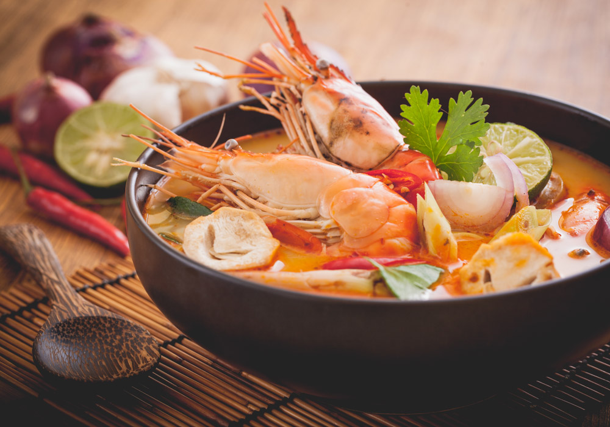

Tom Yum Goong

Hot and sour Thai soup, cooked with shrimp
Tom yum or tom yam is a type of hot and sour Thai soup, usually cooked with
shrimp.
Tom yum has its origin in Thailand.
The words "tom yam" are derived from two Thai words.
Tom refers to the boiling process, while yam means 'mixed'.
Ingredients
- Broth
- Lemongrass
- Kaffir lime leaves
- Galangal
- Lime juice
- Fish sauce
- Chilli peppers
- Shrimp
Recipe Instructions
- Make the shrimp stock by sauteing shrimp shells
and/or heads until the bottom of the pot
starts collecting browned bits
- Deglaze with water and scrape all the stuck bits
from the bottom of the pot
- If using shrimp heads, use tongs to squeeze out
the tasty tomalley inside
- Simmer for about 45 minutes. You can add some chopped
onions to the simmering stock if you like
- Strain the stock and add the lemongrass, galangal, makrut lime
leaves and Thai chilles
- Simmer for 5 minutes
- Add the shrimp, bring the stock back to a simmer and then
turn off the heat
- Allow the residual heat of the soup to
fully cook the shrimp for the next 2 minutes
- Add the Thai chilli paste and fish sauce and stir to dissolve
the paste
- Add lime juice and then taste and adjust, adding sugar
only if needed
Return to main page